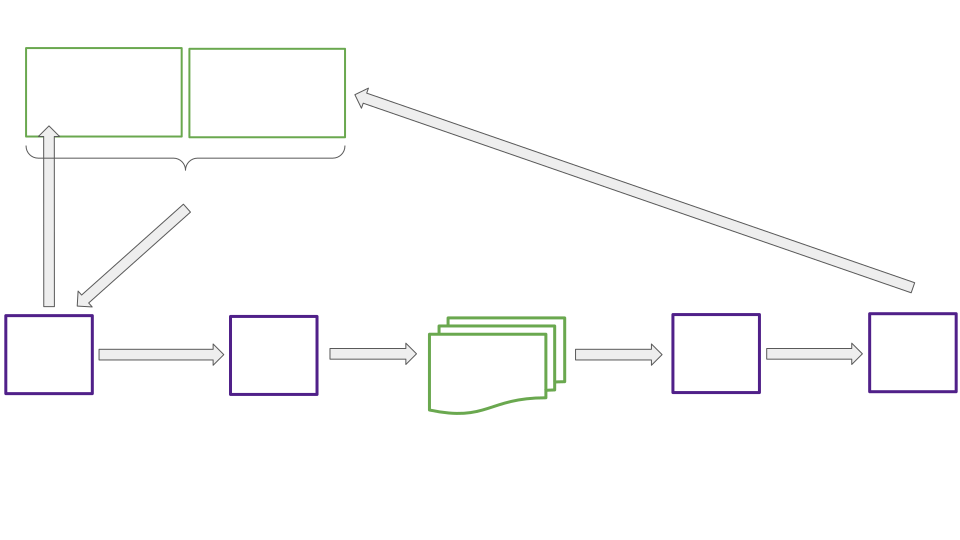

<!DOCTYPE html>
<html lang="en">

<head>
  <meta charset="utf-8" />
  <meta name="viewport" content="width=device-width, initial-scale=1.0, maximum-scale=1.0, user-scalable=no" />

  <title>Deep Dive, Asynchronous Backing</title>
  <link rel="icon" href="./../../../assets/favicon.svg" />
  <link rel="shortcut icon" href="./../../../assets/favicon.png" />
  <link rel="stylesheet" href="./../../../dist/reset.css" />
  <link rel="stylesheet" href="./../../../dist/reveal.css" />
  <link rel="stylesheet" href="./../../.././assets/styles/PBA-theme.css" id="theme" />
  <link rel="stylesheet" href="./../../../css/highlight/shades-of-purple.css" />

  <link rel="stylesheet" href="./../../.././assets/styles/custom-classes.css" />

</head>

<body class="site">
  <header class="site-header">
    <!-- This logo is a link only on the watching server, not the production build -->
    <a href="">
      
    </a>
  </header>
  <main class="reveal">
    <article class="slides">
      <section  data-markdown><script type="text/template">

# Deep Dive, Asynchronous Backing

<aside class="notes"><p>I&#39;ll be presenting the second of 3 lectures providing a window into Polkadot core, a slice of where we&#39;re at and where we&#39;re headed.</p>
<p>This lecture covers asynchronous backing, the new feature with potential to deliver shorter parachain block times and an order of magnitude increase in quantity of Polkadot blockspace.</p>
<p>Lets get to it</p>
</aside></script></section><section  data-markdown><script type="text/template">
## Overview

<pba-flex center>

- Async Backing Motivation
- Laying the Groundwork, Contextual Execution of Parablocks
- Prospective Parachains, Storing Products of the Backing Process
- Supporting Changes
- Async Backing Advantages, Current and Future

</pba-flex>
</script></section><section  data-markdown><script type="text/template">
<!-- .slide: data-background-color="#4A2439" -->

# Async Backing Motivation
</script></section><section  data-markdown><script type="text/template">
## Terminology: Backable vs Backed

<pba-flex center>

- Backable candidate:
  - Output of the off-chain backing process
  - Received a quorum of "valid" votes from its backing group
- Backed candidate:
  - A backable candidate that has been placed on-chain
  - Also termed "pending availability"

</pba-flex>

<aside class="notes"><p>We avoid backing any candidate on the relay chain unless we know there is room for that candidate in the availability process.
To do otherwise risks wasted on-chain work.</p>
<p>When a candidate is backed on-chain it immediately occupies an availability core and enters the availability, or erasure coding, process.</p>
</aside></script></section><section  data-markdown><script type="text/template">
## Synchronous Backing



<aside class="notes"><p>Can anyone spot a problem with synchronous model?</p>
<ul>
<li><p>Problem 1</p>
<ul>
<li>Can only start work on new parablock when prior is included</li>
<li>One relay block for backing, one for inclusion</li>
<li>Minimum block time of 12 seconds</li>
</ul>
</li>
<li><p>Problem 2</p>
<ul>
<li>Minimal time to submit collation for 12 second total block time</li>
<li>About .5 seconds</li>
<li>Not enough to fill block fully</li>
</ul>
</li>
</ul>
</aside></script></section><section  data-markdown><script type="text/template">
## Asynchronous Backing



<aside class="notes"><ul>
<li>Point out the two independent processes and the &quot;stopping points between them&quot;</li>
<li>Walk through, starting with unincluded segment</li>
</ul>
</aside></script></section><section  data-markdown><script type="text/template">
## The Async Backing Reasonable Collator Assumptions

<pba-flex center>

1. "The best existing parablock I'm aware of will eventually be included in the relay chain."
1. "There won't be a chain reversion impacting that best parablock."

</pba-flex>

<br />
<br />

> The Stakes Are Low

<aside class="notes"><p>Best is determined by a process similar to the BABE fork choice rule.
Brief BABE fork choice rule review</p>
</aside></script></section><section  data-markdown><script type="text/template">
<!-- .slide: data-background-color="#4A2439" -->

# Contextual Execution of Parablocks
</script></section><section  data-markdown><script type="text/template">
## Async Backing Execution Context

<pba-cols>
<pba-col center>

- From relay chain
  - Base constraints
  - Relay parent
- From unincluded segment
  - Constraint modifications
  - Required parent

</pba-col>
<pba-col>


</pba-col>
</pba-cols>

<aside class="notes"><ul>
<li>How it was before:<ul>
<li>Required parent included in relay parent</li>
<li>No need for constraint modifications</li>
</ul>
</li>
<li>Relay parent vs required parent</li>
<li>Base constraints vs modifications</li>
</ul>
</aside></script></section><section  data-markdown><script type="text/template">
## Constraints and Modifications

```rust

pub struct Constraints {
	/// The minimum relay-parent number accepted under these constraints.
	pub min_relay_parent_number: BlockNumber,
	/// The maximum Proof-of-Validity size allowed, in bytes.
	pub max_pov_size: usize,
	/// The maximum new validation code size allowed, in bytes.
	pub max_code_size: usize,
	/// The amount of UMP messages remaining.
	pub ump_remaining: usize,
	/// The amount of UMP bytes remaining.
	pub ump_remaining_bytes: usize,
	/// The maximum number of UMP messages allowed per candidate.
	pub max_ump_num_per_candidate: usize,
	/// Remaining DMP queue. Only includes sent-at block numbers.
	pub dmp_remaining_messages: Vec<BlockNumber>,
	/// The limitations of all registered inbound HRMP channels.
	pub hrmp_inbound: InboundHrmpLimitations,
	/// The limitations of all registered outbound HRMP channels.
	pub hrmp_channels_out: HashMap<ParaId, OutboundHrmpChannelLimitations>,
	/// The maximum number of HRMP messages allowed per candidate.
	pub max_hrmp_num_per_candidate: usize,
	/// The required parent head-data of the parachain.
	pub required_parent: HeadData,
	/// The expected validation-code-hash of this parachain.
	pub validation_code_hash: ValidationCodeHash,
	/// The code upgrade restriction signal as-of this parachain.
	pub upgrade_restriction: Option<UpgradeRestriction>,
	/// The future validation code hash, if any, and at what relay-parent
	/// number the upgrade would be minimally applied.
	pub future_validation_code: Option<(BlockNumber, ValidationCodeHash)>,
}

/// Modifications to constraints as a result of prospective candidates.
#[derive(Debug, Clone, PartialEq)]
pub struct ConstraintModifications {
	/// The required parent head to build upon.
	pub required_parent: Option<HeadData>,
	/// The new HRMP watermark
	pub hrmp_watermark: Option<HrmpWatermarkUpdate>,
	/// Outbound HRMP channel modifications.
	pub outbound_hrmp: HashMap<ParaId, OutboundHrmpChannelModification>,
	/// The amount of UMP messages sent.
	pub ump_messages_sent: usize,
	/// The amount of UMP bytes sent.
	pub ump_bytes_sent: usize,
	/// The amount of DMP messages processed.
	pub dmp_messages_processed: usize,
	/// Whether a pending code upgrade has been applied.
	pub code_upgrade_applied: bool,
}

```

<aside class="notes"><p>Constraints to Highlight:</p>
<ul>
<li>required_parent: Fragment would place its corresponding candidate here for children</li>
<li>min_relay_parent_number: Monotonically increasing rule, max_ancestry_len</li>
<li>ump_messages_sent mods ump_remaining</li>
<li>code_upgrade_applied: Only one in the unincluded segment at a time!</li>
</ul>
</aside></script></section><section  data-markdown><script type="text/template">
<!-- .slide: data-background-color="#4A2439" -->

# Prospective Parachains

Storing Products of the Backing Process
</script></section><section  data-markdown><script type="text/template">
## Prospective Parachains Snapshot


<aside class="notes"><ul>
<li>Fragment trees only built for active leaves</li>
<li>Fragment trees built per scheduled parachain at each leaf</li>
<li>Fragment trees may have 0 or more fragments representing potential parablocks making up possible futures for a parachain&#39;s state.</li>
<li>Collation generation, passing, and seconding work has already been completed for each fragment.</li>
</ul>
</aside></script></section><section  data-markdown><script type="text/template">
## Anatomy of A Fragment Tree


<aside class="notes"><p>In this order</p>
<ul>
<li>Scope</li>
<li>Root node: corresponds to most recently included candidate</li>
<li>Child nodes: Mention required parent rule</li>
<li><code>FragmentNode</code> contents</li>
<li><code>CandidateStorage</code></li>
<li><code>GetBackableCandidate</code></li>
</ul>
</aside></script></section><section  data-markdown><script type="text/template">


## Fragment Tree Inclusion Checklist

When and where can a candidate be included in a fragment tree?

<pba-flex center>

- Required parent is in tree
  - Included as child of required parent, if at all
- `Fragment::validate_against_constraints()` passes
- Relay parent in scope

</pba-flex>
</script></section><section  data-markdown><script type="text/template">
## Relay Parent Limitations for Fragments

What does it mean for a relay parent to be in scope?

When is a relay parent allowed to be out of scope?

<aside class="notes"><p>In Scope:</p>
<ul>
<li>On same fork of the relay chain</li>
<li>Within <code>allowed_ancestry_len</code></li>
</ul>
<p>Out of scope:</p>
<ul>
<li>Candidates pending availability have been seen on-chain and need to be accounted for even if they go out of scope.
The most likely outcome for candidates pending availability is that they will become available, so we need those blocks to be in the <code>FragmentTree</code> to accept their children.</li>
<li>Relay parent can&#39;t move backwards relative to that of the required parent</li>
</ul>
</aside></script></section><section  data-markdown><script type="text/template">
## Assembling Base Constraints

Excerpt from `backing_state()` in `runtime/parachains/src/runtime_api_impl/vstaging.rs`

```rust

let (ump_msg_count, ump_total_bytes) = <ump::Pallet<T>>::relay_dispatch_queue_size(para_id);
let ump_remaining = config.max_upward_queue_count - ump_msg_count;

let constraints = Constraints {
		min_relay_parent_number,
		max_pov_size: config.max_pov_size,
		max_code_size: config.max_code_size,
		ump_remaining,
		ump_remaining_bytes,
		max_ump_num_per_candidate: config.max_upward_message_num_per_candidate,
		dmp_remaining_messages,
		hrmp_inbound,
		hrmp_channels_out,
		max_hrmp_num_per_candidate: config.hrmp_max_message_num_per_candidate,
		required_parent,
		validation_code_hash,
		upgrade_restriction,
		future_validation_code,
	};

```
</script></section><section  data-markdown><script type="text/template">
## Applying Constraint Modifications

Excerpt from `Constraints::apply_modifications()`

```rust

if modifications.dmp_messages_processed > new.dmp_remaining_messages.len() {
	return Err(ModificationError::DmpMessagesUnderflow {
		messages_remaining: new.dmp_remaining_messages.len(),
		messages_processed: modifications.dmp_messages_processed,
	})
} else {
	new.dmp_remaining_messages =
		new.dmp_remaining_messages[modifications.dmp_messages_processed..].to_vec();
}

```
</script></section><section  data-markdown><script type="text/template">
## Validating Against Constraints

`Excerpt from Fragment::validate_against_constraints()`

```rust

if relay_parent.number < constraints.min_relay_parent_number {
	return Err(FragmentValidityError::RelayParentTooOld(
		constraints.min_relay_parent_number,
		relay_parent.number,
	))
}

```
</script></section><section  data-markdown><script type="text/template">
## AsyncBackingParams

```rust

pub struct AsyncBackingParams {
	/// The maximum number of para blocks between the para head in a relay parent
	/// and a new candidate. Restricts nodes from building arbitrary long chains
	/// and spamming other validators.
	///
	/// When async backing is disabled, the only valid value is 0.
	pub max_candidate_depth: u32,
	/// How many ancestors of a relay parent are allowed to build candidates on top
	/// of.
	///
	/// When async backing is disabled, the only valid value is 0.
	pub allowed_ancestry_len: u32,
}

```

</br>
<pba-flex center>

Numbers in use for testing Prospective Parachains:

- `max_candidate_depth` = 4
- `allowed_ancestry_len` = 3

</pba-flex>
</script></section><section  data-markdown><script type="text/template">
<!-- .slide: data-background-color="#4A2439" -->

# Supporting Changes
</script></section><section  data-markdown><script type="text/template">
## Statement Distribution Changes


<aside class="notes"><p>Why do we need the refactor?</p>
<p>Answer: Cap on simultaneous candidates per backing group ~3x higher</p>
<p>Mention</p>
<ul>
<li>Announcement - Acknowledgement</li>
<li>Request - Response</li>
</ul>
</aside></script></section><section  data-markdown><script type="text/template">
## Provisioner Changes

Function `request_backable_candidates` from the Provisioner subsystem

```rust

/// Requests backable candidates from Prospective Parachains subsystem
/// based on core states.
///
/// Should be called when prospective parachains are enabled.
async fn request_backable_candidates(
	availability_cores: &[CoreState],
	bitfields: &[SignedAvailabilityBitfield],
	relay_parent: Hash,
	sender: &mut impl overseer::ProvisionerSenderTrait,
) -> Result<Vec<CandidateHash>, Error> {
	let block_number = get_block_number_under_construction(relay_parent, sender).await?;

	let mut selected_candidates = Vec::with_capacity(availability_cores.len());

	for (core_idx, core) in availability_cores.iter().enumerate() {
		let (para_id, required_path) = match core {
			CoreState::Scheduled(scheduled_core) => {
				// The core is free, pick the first eligible candidate from
				// the fragment tree.
				(scheduled_core.para_id, Vec::new())
			},
			CoreState::Occupied(occupied_core) => {
				if bitfields_indicate_availability(core_idx, bitfields, &occupied_core.availability)
				{
					if let Some(ref scheduled_core) = occupied_core.next_up_on_available {
						// The candidate occupying the core is available, choose its
						// child in the fragment tree.
						(scheduled_core.para_id, vec![occupied_core.candidate_hash])
					} else {
						continue
					}
				} else {
					if occupied_core.time_out_at != block_number {
						continue
					}
					if let Some(ref scheduled_core) = occupied_core.next_up_on_time_out {
						// Candidate's availability timed out, practically same as scheduled.
						(scheduled_core.para_id, Vec::new())
					} else {
						continue
					}
				}
			},
			CoreState::Free => continue,
		};

		let candidate_hash =
			get_backable_candidate(relay_parent, para_id, required_path, sender).await?;

		match candidate_hash {
			Some(hash) => selected_candidates.push(hash),
			None => {
				gum::debug!(
					target: LOG_TARGET,
					leaf_hash = ?relay_parent,
					core = core_idx,
					"No backable candidate returned by prospective parachains",
				);
			},
		}
	}

	Ok(selected_candidates)
}

```

<aside class="notes"><ul>
<li>Per core<ul>
<li>Discuss core states free, scheduled, occupied</li>
<li>Discuss core freeing criteria<ul>
<li><code>bitfields_indicate_availability</code><ul>
<li>next_up_on_available</li>
</ul>
</li>
<li>availability time out<ul>
<li>next_up_on_timeout</li>
</ul>
</li>
</ul>
</li>
<li>Explain what required path is</li>
<li>Why is required path left empty?</li>
</ul>
</li>
</ul>
</aside></script></section><section  data-markdown><script type="text/template">


## Cumulus Changes

<pba-flex center>

- Consensus driven block authoring
- Parachain consensus refactor
  - Aura rewrite
  - Custom sequencing consensus:
    - Tendermint
    - Hotshot consensus

</pba-flex>
</script></section><section  data-markdown><script type="text/template">
<!-- .slide: data-background-color="#4A2439" -->

# Async Backing Advantages, Current and Future
</script></section><section  data-markdown><script type="text/template">
## Advantages of Asynchronous Backing

<pba-flex center>

1. 3-5x more extrinsics per block
1. Shorter parachain block times 6s vs 12s
1. Resulting 6-10x boost in quantity of blockspace
1. Fewer wasted parachain blocks

</pba-flex>

<aside class="notes"><ol>
<li>Collators have more time to fill each block</li>
<li>Advance work ensures backable candidates for each parachain are present to be backed on the relay chain every 6 seconds</li>
<li>Self explanatory</li>
<li>Allow parachain blocks to be ‘reused’ when they don’t make it onto the relay chain in the first attempt</li>
</ol>
</aside></script></section><section  data-markdown><script type="text/template">
## Async Backing and Exotic Core Scheduling

<pba-flex center>

- What is exotic core scheduling?
  - Multiple cores per parachain
  - Overlapping leases of many lengths
  - Lease + On-demand
- How does asynchronous backing help?

<pba-flex>

<aside class="notes"><ul>
<li>The unincluded segment is necessary to build 2 or more parablocks in a single relay block</li>
</ul>
</aside></script></section><section  data-markdown><script type="text/template">


## Shorter Block Times?

<pba-flex center>

- Async backing gives us unincluded block queuing
- What else we need for useful shorter times:
  - Soft finality
  - Inclusion dependencies (comes with elastic scaling)

<pba-flex>

<aside class="notes"><ul>
<li>Soft finality means that the collators will submit as many new blocks with the same extrinsics as needed to retain the same ordering if a parablock candidate is dropped.</li>
<li>Inclusion dependencies: Take two parablocks a and b, where a is built on top of b.
Then if a and b are being made available on two different cores during the same block we need to ensure that b waits for inclusion until a is also included.</li>
</ul>
</aside></script></section><section  data-markdown><script type="text/template">
## Resources

<pba-col center>

1. [Polkadot Async Backing PR](https://github.com/paritytech/polkadot/pull/5022)
1. [Implementers Guide: Prospective Parachains](https://github.com/paritytech/polkadot/blob/631b66d5daa642fad7ed0a9712194c5b85b96563/roadmap/implementers-guide/src/node/backing/prospective-parachains.md)

</pba-col>
</script></section><section  data-markdown><script type="text/template">
<!-- .slide: data-background-color="#4A2439" -->

# Questions
</script></section>
    </article>
  </main>

  <script src="./../../../dist/reveal.js"></script>

  <script src="./../../../plugin/markdown/markdown.js"></script>
  <script src="./../../../plugin/highlight/highlight.js"></script>
  <script src="./../../../plugin/zoom/zoom.js"></script>
  <script src="./../../../plugin/notes/notes.js"></script>
  <script src="./../../../plugin/math/math.js"></script>

  <script src="./../../../assets/plugin/mermaid.js"></script>
  <script src="./../../../assets/plugin/mermaid-theme.js"></script>

  <script src="./../../../assets/plugin/chart/chart.js"></script>
  <script src="./../../../assets/plugin/chart/chart.min.js"></script>

  <script src="./../../../assets/plugin/tailwindcss.min.js"></script>

  <script>
    function extend() {
      var target = {};
      for (var i = 0; i < arguments.length; i++) {
        var source = arguments[i];
        for (var key in source) {
          if (source.hasOwnProperty(key)) {
            target[key] = source[key];
          }
        }
      }
      return target;
    }

    // default options to init reveal.js
    var defaultOptions = {
      controls: true,
      progress: true,
      history: true,
      center: true,
      transition: 'default', // none/fade/slide/convex/concave/zoom
      slideNumber: true,
      mermaid: {
        startOnLoad: false,
        logLevel: 3,
        theme: 'base',
        themeVariables: {
          primaryColor: purple,
          primaryTextColor: white,
          primaryBorderColor: pink,
          lineColor: pink,
          secondaryColor: lightPurple,
          tertiaryColor: lightPurple,
        },
      },
      chart: {
        defaults: {
          color: 'lightgray', // color of labels
          scale: {
            beginAtZero: true,
            ticks: { stepSize: 1 },
            grid: { color: "lightgray" }, // color of grid lines
          },
        },
        line: { borderColor: ["#ccc", "#E6007A", "#6D3AEE"], "borderDash": [[5, 10], [0, 0]] },
        bar: { backgroundColor: ["#ccc", "#E6007A", "#6D3AEE"] },
      },
      plugins: [
        RevealMarkdown,
        RevealHighlight,
        RevealZoom,
        RevealNotes,
        RevealMath,
        RevealMermaid,
        RevealChart
      ]
    };

    // options from URL query string
    var queryOptions = Reveal().getQueryHash() || {};

    var options = extend(defaultOptions, {"width":1400,"height":900,"margin":0,"minScale":0.2,"maxScale":2,"transition":"none","controls":true,"progress":true,"center":true,"slideNumber":true,"backgroundTransition":"fade"}, queryOptions);
  </script>


  <script>
    Reveal.initialize(options);
  </script>
</body>

</html>
